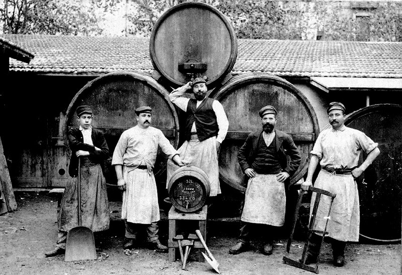
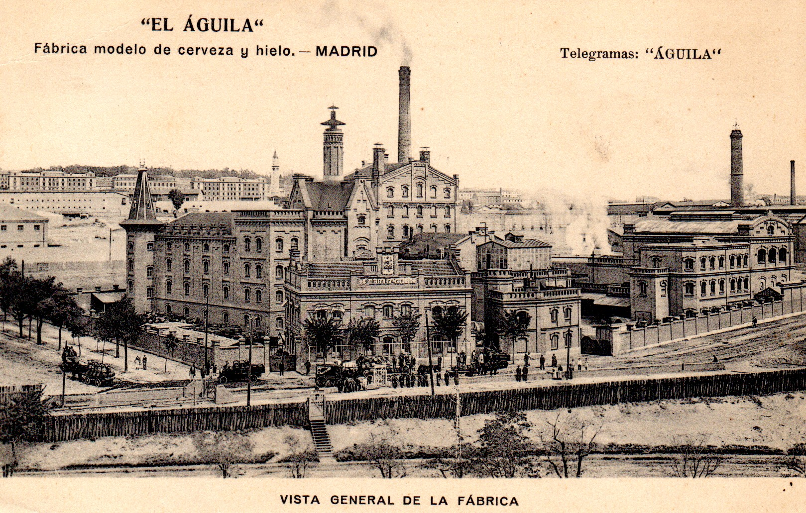

Historia de la cerveza
La historia de la cerveza se remonta a varios milenios atrás, probablemente los prehistóricos ya elaboraban esta bebida, aunque los primeros registros que se tienen son de la antigua Mesopotamia. Actualmente las tendencias en elaboración de cerveza están muy encaminadas hacia estilos más tradicionales elaborados de forma artesanal.

Eureka
Su origen data de 4 mil a.C, en la zona de la Mesopotamia del Oriente Medio, hace más de siete mil años. La evidencia más antigua es una tablilla en la que se observan varias personas tomando cerveza de un mismo recipiente. Los Babilonios heredaron de ellos las tareas del cultivo de la tierra y la elaboración de cerveza en una tabla de arcilla, la cual explica su fórmula de elaboración. Su descubrimiento fue accidental: se mezcló agua con cereales y sucedió el milagro. Como resultado los sumerios humedecían el pan con agua y la levadura fermentaba la mezcla que la convertía en bebida alcohólica. Se producía un ritual en el que la gente se unía. La historia de la cerveza es también la de la agricultura: los asentamientos se forjaban alrededor de los cultivos. Lo relevante es que era un alimento ya que tenía una fuente de azúcar difícil de conseguir.
La bebida del pueblo
En Egipto la denominaron “zythum” y era esencial en la dieta cotidiana. Mientras que el vino era para las clases altas, la cerveza era para el pueblo. En época de los faraones, sus fábricas producían hasta 4 millones de litros por año, tanto, que los graneros estaban prácticamente destinados a la cebada para su elaboración y la utilizaban como moneda de cambio. Los egipcios fueron los primeros en mercantilizar la cerveza. Como buenos comerciantes, dado que el precio este cereal era elevado, utilizaban una variedad del trigo: la espelta. Además descubrieron la malta, le agregaron azafrán, miel, jengibre y comino para darle sabor y color.

La expansión
Los griegos heredaron las técnicas de fabricación de cerveza de los elaboradores de Egipto, y a su vez traspasaron este conocimiento a los romanos, que la llamaron "cerevisia", en honor de la diosa Ceres de la agricultura. La cerveza de cebada proviene de Europa, trasladándose desde Armenia, Georgia y el sur de Rusia hasta Bohemia, Alemania, Bélgica y las Islas Británicas, donde se convertiría en aquella cerveza que conocemos en la actualidad.
¿Cómo se prepara la cerveza?
Sus cuatro ingredientes principales son: agua, cebada, levadura y lúpulo. Se puede utilizar cualquiera de estos cereales para fabricarla: cebada, trigo, maíz, centeno o arroz. Se le añade lúpulo, hierbas, frutas o chocolate. El primer paso de producción es el malteado del grano de cebada que se mezcla con agua para que germine y se descompongan los almidones para que aparezcan los azúcares. Se calienta el grano para frenar su germinado. El secado de la malta produce sabores y colores que formarán parte del producto final. Dependiendo del tipo de secado se producirán diferentes tipos de sabores. Se muele la malta y se mezcla con agua caliente para su maceración durante una hora, tiempo en el que se desprenden sus azúcares. Para el resultado final influye el tipo de agua utilizada, que debe ser pura. Se procesa el líquido macerado y se lo cuece con lúpulo, que actúa como conservante natural y le da el sabor característico. El tipo de lúpulo incide en el sabor y aroma, además de mejorar la espuma, lo cual influye en su estética. Se añade levadura, organismo vivo, que consume el azúcar y lo convierte en alcohol. Al pasar la cerveza por una doble fermentación esto le da sus características burbujas.
Cerveza en todo el mundo
En el Norte de Europa se consumía como pan líquido por los azúcares y nutrientes. Era elaborada por mujeres en pequeñas cantidades porque no se podía conservar. En los monasterios la producción a gran escala fue en el Siglo X. Los monjes, vinculados a la agricultura, perfeccionaron sus recetas con los escritos de los egipcios, estudiando el proceso y mejorándolo. Empezaron a usar el lúpulo, marcando el fin de cervezas turbias y dulces.
En España, la cerveza fue popularizada en el siglo XVI por Carlos I de España y V de Alemania, tras su retirada al Monasterio de Yuste. El emperador instaló una pequeña fábrica de esta bebida en el monasterio, al que le había acompañado un maestro cervecero.
Sapporo es el hogar de la cerveza japonesa. En 1876 aparece la primera fábrica, utilizando la alemana como inspiración. A pesar del éxito de Sapporo, las más populares son las importadas.
En Dublín, Irlanda, la cerveza negra seca del tipo stout fue elaborada por primera vez en 1759 por el cervecero Arthur Guinness, en la empresa cervecera denominada St. James's Gate Brewery.
Actualmente hay un auge de la cerveza artesanal y una consecuente proliferación de empresas que se dedican a la elaboración de la misma, la cual se prepara con agua, malta, lúpulo y cebada pero sin conservantes que afecten su sabor.